사용시간을 넘어, 디지털 행동을 이해합니다. Beyond Screen Time. Understanding Digital Behavior.
모먼트 루미나는 아이의 디지털 활동에서 발생하는 다양한 행동 신호를 분석하여 관심, 몰입, 변화의 흐름을 이해합니다. Moment Lumina analyzes digital behavior signals to understand attention, interest, and behavioral change.
시선 이동과 체류 지점을 기반으로 몰입 흐름을 분석합니다.
터치 빈도, 반응 속도, 제스처 패턴을 분석합니다.
기기 움직임과 안정성 신호를 통해 행동 맥락을 파악합니다.
앱 사용 시간, 실행 흐름을 분석합니다.
수집된 행동 신호는 AI 분석 엔진을 거쳐 부모가 이해할 수 있는 인사이트로 변환됩니다. Behavior signals are transformed into meaningful parent insights through the AI engine.
Eye Tracking · Touch Pattern · Motion Signal · App Activity
어디에 오래 머물렀는지, 어떤 활동에 집중이 반복되었는지 분석합니다.
콘텐츠, 앱, 주제 소비 패턴을 기반으로 관심 형성과 변화를 탐지합니다.
이전 기간 대비 달라진 행동 흐름과 새로운 패턴을 발견합니다.
아이의 하루를 이해 가능한 이야기로 전환합니다.
특정 콘텐츠에 오래 머무는 주의 흐름이 관찰됩니다.
Sustained attention was detected within a specific content category.새로운 관심 영역이 기존 활동과 함께 나타나고 있습니다.
Emerging interest clusters were identified alongside existing behaviors.기존 활동 외 새로운 탐색 패턴이 감지되었습니다.
New exploration behaviors have been detected beyond previous activity patterns.콘텐츠와 활동 범위가 점차 다양해지고 있습니다.
Content consumption is becoming increasingly diverse over time.데이터는 숫자로 끝나지 않습니다. 모먼트는 부모가 아이와 대화를 시작할 수 있는 이야기로 바꿉니다. Data becomes a story that helps parents understand and start meaningful conversations.
Interest in science content has increased recently.
Your child spends more time on creating and exploring activities.
New behavioral patterns are emerging across digital activities.
아이의 하루를, 이해 가능한 이야기로
MOMENT LUMINA · AI-Powered Digital Behavior Intelligence